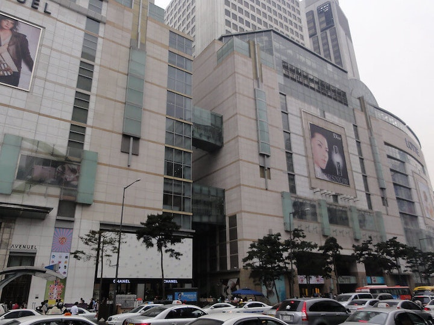

Korea
現在、日本では多くの韓国系の商品が輸入されていて、人気商品として売られています。 また、日本で活躍する韓国人のアーティストやアイドルも増えてきていて、時に日本の有名人よりも人気が出るケースもあります。韓国は世界中が注目している国と言えるでしょう。
おすすめスポット
女子旅におすすめのショッピングスポットとして、ロッテ百貨店 本店が挙げられます。明洞にあるロッテ百貨店は、免税店やホテルが併設された明洞のランドマークともいえるデパートです。地下1階から14階まである売り場には、国内・海外ブランドが勢ぞろい。地下鉄2号線・乙支路入口駅に直結しているため、雨の日でも濡れずにショッピングを楽しめると言われています。日本語の通訳や荷物預かりサービスもあるため、安心してショッピングを楽しめるでしょう。

他には、韓国ソウルにある世界最大規模のテーマパーク「ロッテワールド」がおすすめで、エバーランド・ソウルランドに並び、3大娯楽施設のひとつとして知られています。
屋内エリアの「アドベンチャー」と、屋外エリアの「マジックアイランド」に分かれており、アトラクションはもちろん、飲食店やフォトスポット、ギフトショップなど様々な施設があるため、一日中楽しむことができます。マジックアイランドには、ロッテワールドのシンボルであるお城があり、ここで記念写真を撮る人がたくさんいます。
- 参考サイト:https://www.klook.com/ja/blog/sightseeing-south-korea/